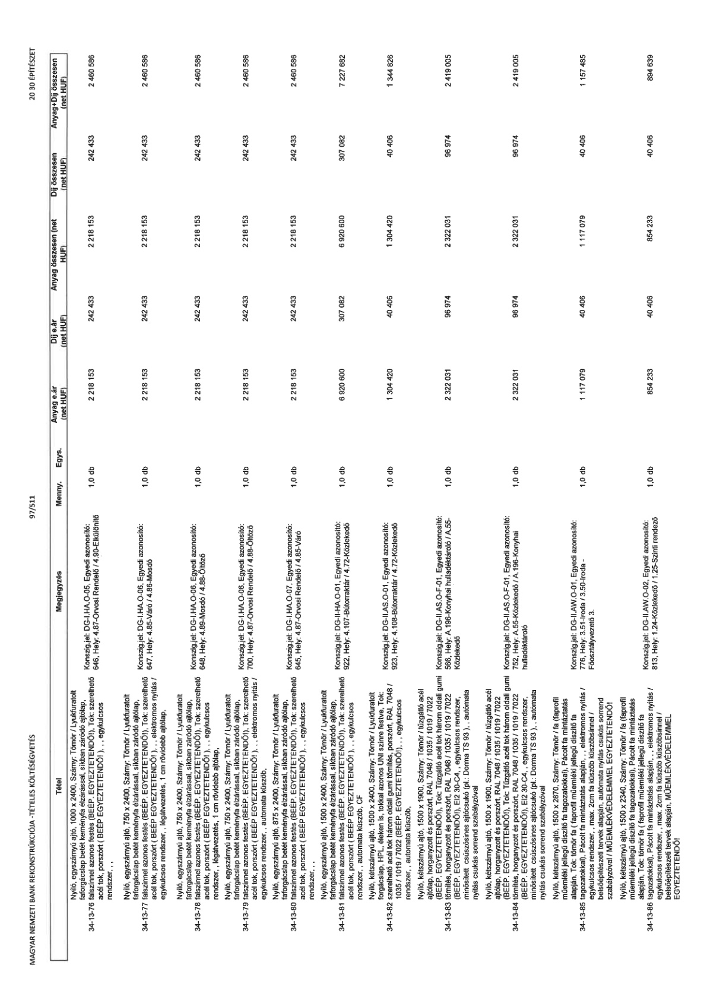

| Tétel | Megjegyzés | Menny. | Egys. | Anyag e.ár (net HUF) | Díj e.ár (net HUF) | Anyag összesen (net HUF) | Díj összesen (net HUF) | Anyag+Díj összesen (net HUF) |
|---|---|---|---|---|---|---|---|---|
| 34-13-76 | Nyíló, egyszárnyú ajtó, 1000 x 2400, Szárny: Tömör / Lyukfuratolt forgácslap betét keményfa élzárással, síkban záródó ajtólap, falburkolattal azonos festés (BEEP. EGYEZTETENDŐ!), Tok: szerelhető acél tok, porszórt ( BEEP EGYEZTETENDŐ!), ,, egykulcsos rendszer,,; Konszig.jel: DG-I.HA.O-05, Egyedi azonosító: 646, Hely: 4.87-Orvosi Rendelő / 4.90-Előkülönítő | 1,0 | db | 2 218 153 | 242 433 | 2 218 153 | 242 433 | 2 460 586 |
| 34-13-77 | Nyíló, egyszárnyú ajtó, 750 x 2400, Szárny: Tömör / Lyukfuratolt forgácslap betét keményfa élzárással, síkban záródó ajtólap, falburkolattal azonos festés (BEEP. EGYEZTETENDŐ!), Tok: szerelhető acél tok, porszórt ( BEEP EGYEZTETENDŐ!), ,, elektromos nyitás / egykulcsos rendszer,, 1 cm rövidebb ajtólap,; Konszig.jel: DG-I.HA.O-06, Egyedi azonosító: 647, Hely: 4.85-Váró / 4.86-Mosdó | 1,0 | db | 2 218 153 | 242 433 | 2 218 153 | 242 433 | 2 460 586 |
| 34-13-78 | Nyíló, egyszárnyú ajtó, 750 x 2400, Szárny: Tömör / Lyukfuratolt forgácslap betét keményfa élzárással, síkban záródó ajtólap, falburkolattal azonos festés (BEEP. EGYEZTETENDŐ!), Tok: szerelhető acél tok, porszórt ( BEEP EGYEZTETENDŐ!), ,, egykulcsos rendszer,, légátvezetés, 1 cm rövidebb ajtólap,; Konszig.jel: DG-I.HA.O-06, Egyedi azonosító: 648, Hely: 4.89-Mosdó / 4.88-Öltöző | 1,0 | db | 2 218 153 | 242 433 | 2 218 153 | 242 433 | 2 460 586 |
| 34-13-79 | Nyíló, egyszárnyú ajtó, 750 x 2400, Szárny: Tömör / Lyukfuratolt forgácslap betét keményfa élzárással, síkban záródó ajtólap, falburkolattal azonos festés (BEEP. EGYEZTETENDŐ!), Tok: szerelhető acél tok, porszórt ( BEEP EGYEZTETENDŐ!), ,, elektromos nyitás / egykulcsos rendszer,, automata küszöb,; Konszig.jel: DG-I.HA.O-06, Egyedi azonosító: 700, Hely: 4.87-Orvosi Rendelő / 4.88-Öltöző | 1,0 | db | 2 218 153 | 242 433 | 2 218 153 | 242 433 | 2 460 586 |
| 34-13-80 | Nyíló, egyszárnyú ajtó, 875 x 2400, Szárny: Tömör / Lyukfuratolt forgácslap betét keményfa élzárással, síkban záródó ajtólap, falburkolattal azonos festés (BEEP. EGYEZTETENDŐ!), Tok: szerelhető acél tok, porszórt ( BEEP EGYEZTETENDŐ!), ,, egykulcsos rendszer,,; Konszig.jel: DG-I.HA.O-07, Egyedi azonosító: 645, Hely: 4.87-Orvosi Rendelő / 4.85-Váró | 1,0 | db | 2 218 153 | 242 433 | 2 218 153 | 242 433 | 2 460 586 |
| 34-13-81 | Nyíló, egyszárnyú ajtó, 1500 x 2400, Szárny: Tömör / Lyukfuratolt forgácslap betét keményfa élzárással, síkban záródó ajtólap, falburkolattal azonos festés (BEEP. EGYEZTETENDŐ!), Tok: szerelhető acél tok, porszórt ( BEEP EGYEZTETENDŐ!), ,, egykulcsos rendszer,, automata küszöb, CF; Konszig.jel: DG-II.HA.O-01, Egyedi azonosító: 922, Hely: 4.107-Bútorraktár / 4.72-Közlekedő | 1,0 | db | 6 920 600 | 307 082 | 6 920 600 | 307 082 | 7 227 682 |
| 34-13-82 | Nyíló, kétszárnyú ajtó, 1500 x 2400, Szárny: Tömör / Lyukfuratolt forgácslap, HPL, éleken léc, tokkal azonos UNI színre festve, Tok: szerelhető acél tok három oldali gumi tömítés, porszórt, RAL 7048 / 1035 / 1019 / 7022 (BEEP. EGYEZTETENDŐ!), ,, egykulcsos rendszer,, automata küszöb,; Konszig.jel: DG-II.AS.O-01, Egyedi azonosító: 923, Hely: 4.108-Bútorraktár / 4.72-Közlekedő | 1,0 | db | 1 304 420 | 40 406 | 1 304 420 | 40 406 | 1 344 826 |
| 34-13-83 | Nyíló, kétszárnyú ajtó, 1500 x 1900, Szárny: Tömör / tűzgátló acél ajtólap, horganyzott és porszórt, RAL 7048 / 1035 / 1019 / 7022 (BEEP. EGYEZTETENDŐ!), Tok: Tűzgátló acél tok három oldali gumi tömítés, horganyzott és porszórt, RAL 7048 / 1035 / 1019 / 7022 (BEEP. EGYEZTETENDŐ!), EI2 30-C4, ,, egykulcsos rendszer, minősített csúszósínes ajtócsukó (pl.: Dorma TS 93 ),, automata nyitás csukás sorrend szabályzóval; Konszig.jel: DG-II.AS.F-01, Egyedi azonosító: 566, Hely: A.196-Konyhai hulladéktároló / A.55-Közlekedő | 1,0 | db | 2 322 031 | 96 974 | 2 322 031 | 96 974 | 2 419 005 |
| 34-13-84 | Nyíló, kétszárnyú ajtó, 1500 x 1900, Szárny: Tömör / tűzgátló acél ajtólap, horganyzott és porszórt, RAL 7048 / 1035 / 1019 / 7022 (BEEP. EGYEZTETENDŐ!), Tok: Tűzgátló acél tok három oldali gumi tömítés, horganyzott és porszórt, RAL 7048 / 1035 / 1019 / 7022 (BEEP. EGYEZTETENDŐ!), EI2 30-C4, ,, egykulcsos rendszer, minősített csúszósínes ajtócsukó (pl.: Dorma TS 93 ),, automata nyitás csukás sorrend szabályzóval; Konszig.jel: DG-II.AS.F-01, Egyedi azonosító: 752, Hely: A.55-Közlekedő / A.196-Konyhai hulladéktároló | 1,0 | db | 2 322 031 | 96 974 | 2 322 031 | 96 974 | 2 419 005 |
| 34-13-85 | Nyíló, kétszárnyú ajtó, 1500 x 2870, Szárny: Tömör / fa (faprofil műemléki jellegű díszítő fa tagozatokkal), Pácolt fa mintáztatás alapján, Tok: tömör fa (faprofil műemléki jellegű díszítő fa tagozatokkal), Pácolt fa mintáztatás alapján,, elektromos nyitás / egykulcsos rendszer,, max. 2cm fa küszöb küszöbsínnel / belsőépítészeti tervek alapján, automata nyitás csukás sorrend szabályzóval / MŰEMLÉKVÉDELEMMEL EGYEZTETENDŐ!; Konszig.jel: DG-II.AW.O-01, Egyedi azonosító: 776, Hely: 3.51-Iroda / 3.50-Iroda - Főosztályvezető 3. | 1,0 | db | 1 117 079 | 40 406 | 1 117 079 | 40 406 | 1 157 485 |
| 34-13-86 | Nyíló, kétszárnyú ajtó, 1500 x 2340, Szárny: Tömör / fa (faprofil műemléki jellegű díszítő fa tagozatokkal), Pácolt fa mintáztatás alapján, Tok: tömör fa (faprofil műemléki jellegű díszítő fa tagozatokkal), Pácolt fa mintáztatás alapján,, elektromos nyitás / egykulcsos rendszer,, max. 2cm fa küszöb küszöbsínnel / belsőépítészeti tervek alapján, MŰEMLÉKVÉDELEMMEL EGYEZTETENDŐ!; Konszig.jel: DG-II.AW.O-02, Egyedi azonosító: 813, Hely: 1.24-Közlekedő / 1.25-Szinti rendező | 1,0 | db | 854 233 | 40 406 | 854 233 | 40 406 | 894 639 |
